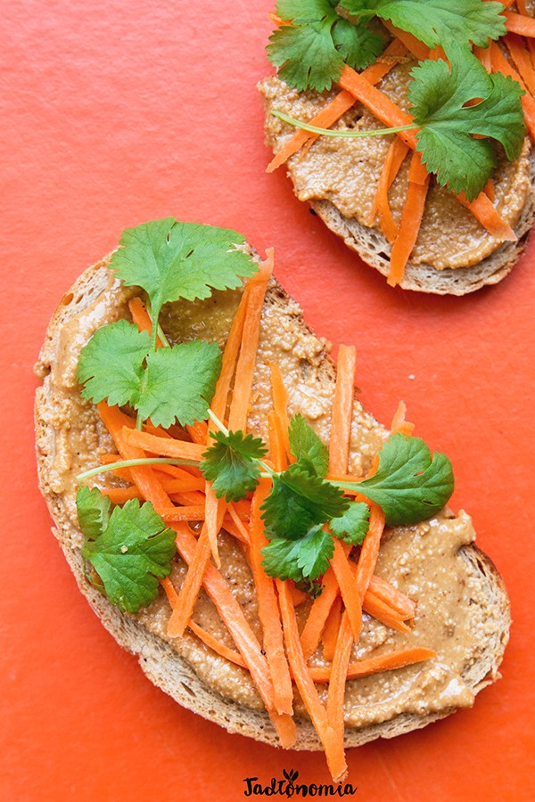

Czas przygotowania: 15 minut
Składniki na 1 mały słoiczek:
1 szklanka orzechów ziemnych, najlepiej niesolonych i nieprażonych
1/4 łyżeczki soli
1/4 łyżeczki cukru trzcinowego
1 łyżka oleju kokosowego lub orzechowego
1 łyżeczka papryki wędzonej
1/4 łyżeczki pieprzu cayenne
Przygotowanie:
Mocno rozgrzać suchą patelnię. Kiedy będzie gorąca wsypać orzechy i prażyć je przez 1 – 2 minuty do czasu, aż zaczną się rumienić, robić tłuste i intensywnie pachnieć. Orzechy przesypać do kubeczka blendera. Dodać sól oraz cukier i blendować przez 1 – 3 minuty do momentu, aż orzechy zaczną się sklejać i oblepiać kubeczek. Wtedy kubeczek oskrobać i blendować jeszcze 1 – 2 minuty. W tym czasie do małej patelenki dodać olej oraz przyprawy i podgrzewać na małym ogniu przez 30 – 60 sekund. Wlać do blendera i blendować ostatnią minutę. Przełożyć do słoiczka, przechowywać w lodówce do pół roku. Dodawać do gulaszy, zup kremów, hummusu, albo po prostu smarować kanapki.
Propozycja podania:
